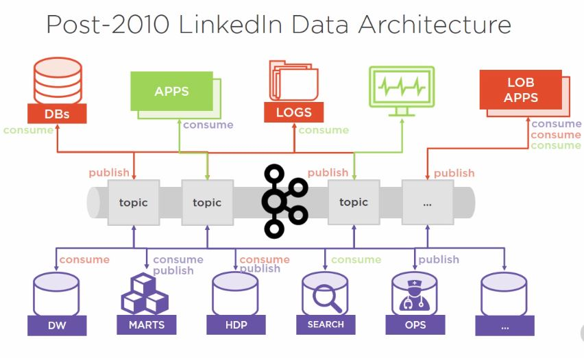

<div class="panel panel-primary"><div class="panel-heading">Materials</div><div class="panel-body table-responsive">
<ul>
	<li><a href="https://app.pluralsight.com/library/courses/apache-kafka-getting-started/table-of-contents" target="_blank">Pluralsight: Getting Started with Apache Kafka [Course]</a></li>
</ul>
</div></div>

<div class="panel panel-primary"><div class="panel-heading">Workspaces</div><div class="panel-body table-responsive">
<ul>
	<li>YTC - Yet to check</em></li>
</ul>
</div></div>

<div class="panel panel-primary" id="1"><div class="panel-heading">Examples</div><div class="panel-body">
<ul>
	<li><a ng-href="#kafkaSetupInWindows10" ng-click="buildBreadCrumbs('Kafka Setup in Windows10', '#kafkaSetupInWindows10')">Kafka Setup in Windows 10</a></li>
</ul>
</div></div>

<script src="js/imageSlider.js"></script>
<link rel="stylesheet" href="css/imageSlider.css">

<div class="panel panel-primary" id="1"><div class="panel-heading">Kafka Images</div><div class="panel-body">
<!-- Images used to open the lightbox -->
<div class="row">
	<div class="column thumbnail-cursor">
    	
  	</div>
</div>

<!-- The Modal/Lightbox -->
<div id="myModal" class="modal">
	<span class="close cursor" onclick="closeModal()">&times;</span>
	<div class="modal-content">
		<div class="mySlides">
      		
    	</div>
	</div>
</div>

</div></div>